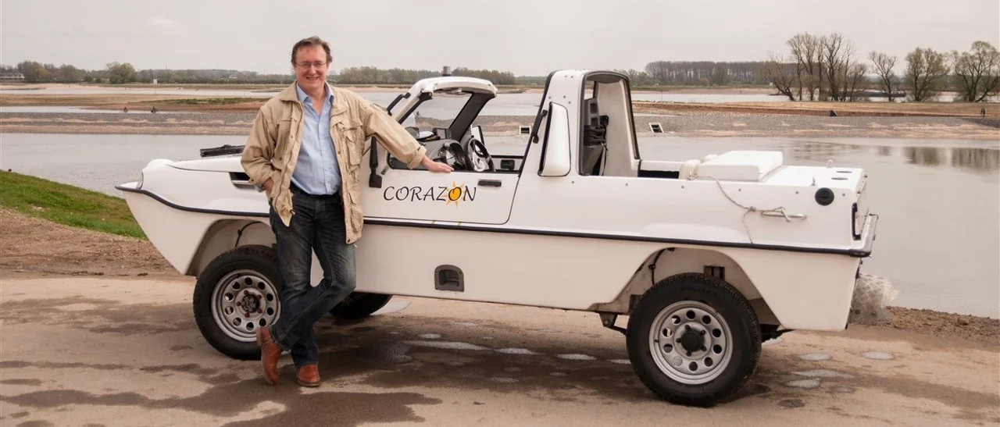
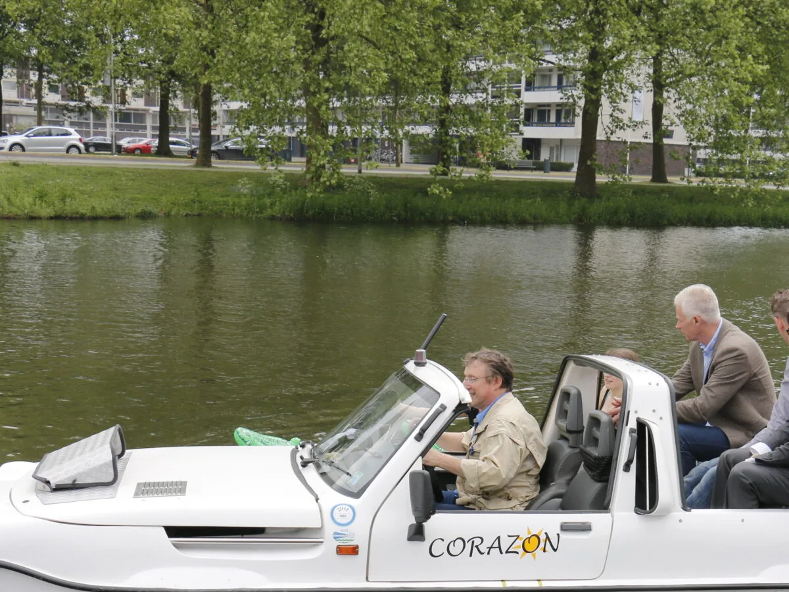

Particulier
Een uitje met de amfibie-auto
Of je nu gaat trouwen of wat te vieren hebt: een ritje met deze amfibie-auto geeft je in elk geval een leuke en onvergetelijke ervaring.

Van de weg zo het water in. Ontdek bijzondere particuliere uitjes, bedrijfsuitjes en bruiloften met de amfibie-auto Corazon.
Te huur inclusief chauffeur · in heel Nederland inzetbaar
Amfibievaartuig Corazon
Van trouwerij tot teamuitje: de Corazon maakt van elke gelegenheid iets onvergetelijks.
Of je nu gaat trouwen of wat te vieren hebt: een ritje met deze amfibie-auto geeft je in elk geval een leuke en onvergetelijke ervaring.
Een originele manier om een jubilaris te verrassen of het team een bijzondere activiteit te geven — ideaal voor kleine groepen.
Je liefde bezegelen is een hoogtepunt in je leven. Met de Corazon arriveren jullie vanuit het water het land op — je gasten zullen versteld staan.
Rijdt daar nu een boot of vaart er een auto? Even snel boodschappen doen is er met deze amfibie-auto niet bij. Hij is veel te leuk om alleen van te genieten — vandaar dat de Corazon te huur is om bijzondere gebeurtenissen nóg specialer te maken.
Of je nu gaat trouwen of wat te vieren hebt, een ritje met deze amfibie-auto geeft je in elk geval een leuke en onvergetelijke ervaring!
Een leuke en originele ervaring, voor een foto-shoot of een vette aankomst op de trouw- of feestlocatie.
Is iemand gek van bijzondere auto's of voertuigen? Dan zit je met een ritje met de amfibie-auto helemaal goed.
Een leuke ervaring als activiteit, ideaal voor kleine groepen.
Intieme rondvaart door mooie steden en de mooiste plekken van Nederland.
Geef iemand een bijzonder cadeau: een onvergetelijke middag met de Corazon.
Of je nu gaat trouwen of een leuke en originele familiefoto wilt.
Een amfibie-auto kan zich zowel op het land als op het water voortbewegen. De bekendste amfibie-auto voor particulier gebruik is de Amphicar — in Nederland en België bekend uit de televisieserie Kapitein Zeppos. Van deze unieke auto's zijn er in de jaren zestig zo'n 4.000 geproduceerd; inmiddels bestaan er nog maar zo'n 400.
De Corazon heeft een Engelse afkomst en is rechtsgestuurd. Daarom wordt de auto uitsluitend inclusief chauffeur verhuurd. Als we eenmaal op het water zijn, mag je wel zelf stuurman of stuurvrouw zijn — als boot kan hij ook vanaf de achterbank bestuurd worden!
Rijden en varen met open dak is de beste beleving van deze amfibie-auto. Voor het geval er toch een buitje valt, is er altijd een soft-top aan boord.
De Corazon wordt uitsluitend inclusief chauffeur verhuurd: een amfibie-auto is een vernuftig stuk techniek met veel knoppen en hendels. Op het water mag je wel zelf de stuurman of stuurvrouw zijn.
Nederland is een waterrijk land met een kleine 2.000 aangelegde boothellingen. Door de vierwielaandrijving kan de Corazon bovendien ook met natuurlijke oevers goed uit de voeten. Bijna alle plekken aan het water zijn daardoor met een korte vaartijd te bereiken.
[Prijs in overleg — neem contact op via het aanvraagformulier of bel +31 6 22 58 99 41.]

Je liefde bezegelen met een huwelijk is een hoogtepunt in je leven. Op deze dag is alles bijzonder — deze amfibie-auto maakt het nóg specialer.
Of het nu bij het stadhuis of bij de feestzaal is: je familie en vrienden zullen verrast opkijken als jullie vanuit het water het land oprijden. Een tochtje op het water kan ook even een rustig moment voor jullie samen vormen, tussen het formele en het feestelijke deel van jullie trouwdag.
Via een van de vele boothellingen glijdt de Corazon zo het water in — en even zo weer het land op.
Plan jullie trouwritBedrijfsuitje“Vandaag bent u echt helemaal onze Kapitein Zeppos!”
— een jubilaris werd thuis opgehaald, kreeg een blinddoek om en ontdekte de Corazon onderweg naar het water. Zo zetten wij uw jubilaris, productpresentatie, fotoshoot of teamuitje in het zonnetje. Ideaal voor kleine groepen.
Nederland telt een kleine 2.000 aangelegde boothellingen. Met vierwielaandrijving kan de Corazon bovendien ook met natuurlijke oevers goed uit de voeten. Bijna alle plekken aan het water zijn daarom met een korte vaartijd te bereiken.
De Corazon wordt uitsluitend inclusief chauffeur verhuurd. Op het water mag je wel zelf de stuurman of stuurvrouw zijn: als boot kan de auto ook vanaf de achterbank bestuurd worden.
Rijden en varen met open dak is de beste beleving. Valt er toch een buitje? Dan monteren we de soft-top, zodat we ook van boven droog blijven.
Vul hier je verzoek in. We zullen dan zo snel mogelijk contact met je opnemen om de mogelijkheden door te nemen.
De Vlerk Amphitours · Opaalstraat 232, 6534 XP Nijmegen
+31 6 22 58 99 41 · info@devlerk.nl